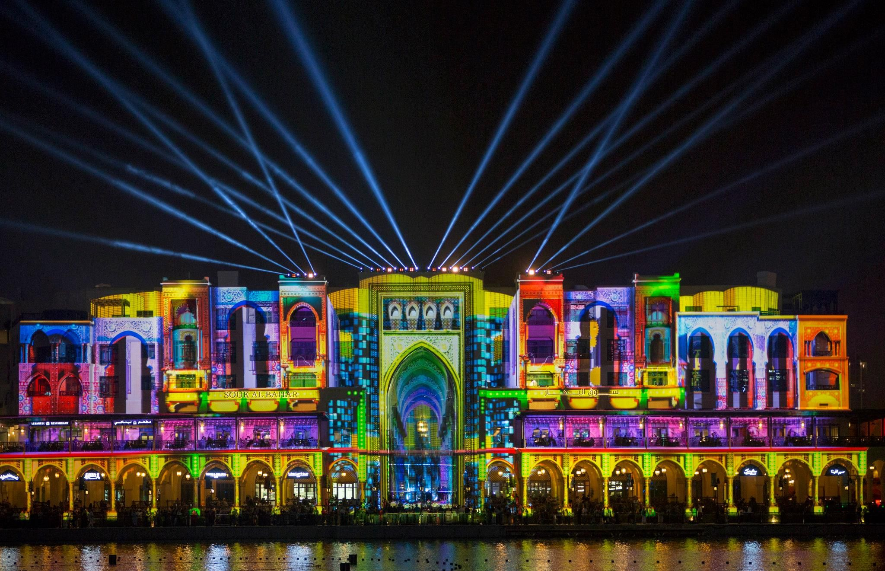
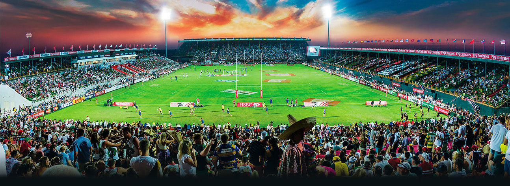

Events & Activities on Display
Cultural Events

As an emerging hub for the modern world, Dubai has a number of exciting events and attractions that are run year-round. Ranging from cultural festivals to large sporting events.
The largest and most highly anticipated of these would be the United Arab Emirates National day, held every year on the 2nd December. The colours of the UAE drape the city, whilst live performances, cultural activities and regional stars all serve to make the day a truly spectacular experience. The day is in celebration of the unification of the emirates in 1971, orchestrated by Sheikh Zayed bin Sultan Al Nahyan, affectionately known as the founding father of the UAE.
Another awe-inspiring sight to behold in Dubai is its celebration of Diwali, also known as the festival of lights. Whilst Dubai is a large majority Muslim, The Hindu festival is on full display from 18th October to 2nd November. Indian food is celebrated whilst firework displays adorn the sky during this time, representing the “victory of light over dark, good over evil and knowledge over ignorance” which the festival stands for.
Sporting Events
Sporting events play a central role in the lives of the people of the UAE with Dubai playing host to a large number of special sporting events. The DP World Tour Championship (the European pro golf tour) climaxes every year in Dubai and is the most important date on the calendar for the tour.

For rugby fans, the Emirates Airlines Dubai rugby sevens plays host to the top sevens teams from around the world such as England, New Zealand and South Africa. The event, played in the national sevens stadium, attracts a myriad of child friendly games, activities and a sprawling food village to accompany the exciting games on display.
Finally, Dubai has the luxury of being a short trip away from the Abu Dhabi F1 race, held every year in November. For any F1 fans hoping to see one of the highlights of the seasons calendar, a vacation to Dubai with a trip out to the track is a brilliant way to round out a trip to the UAE.
For further information on all of the events and activities that Dubai has to offer take a look at visitdubai.com , the official site for Dubai's tourism board. They have a wealth of information on all exciting and new experiences to be had whilst in Dubai.